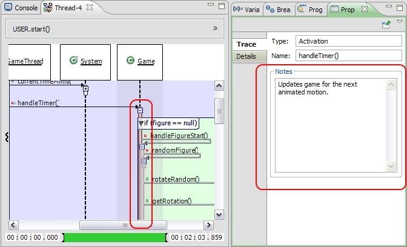
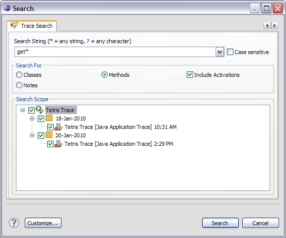
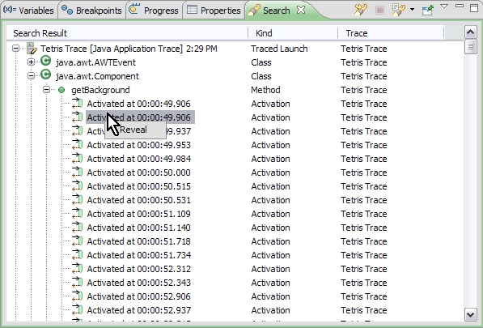
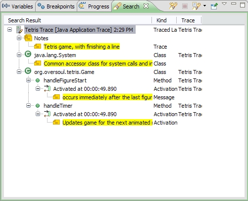

| Property Support for Trace Elements | Nearly every element that is selectable in either the Program Traces view or in the Thread Sequence View can have properties associated with it. Just open the Properties View to see. You can add your own custom notes in the property, which will be automatically saved with your trace.  |
| Trace Search | You can now search your traces to find classes, methods, activations, and notes that you've created. Just find it under the Search menu.   |
| Improved Memory Footprint | These improvements could potentially save you hundreds of megabytes of RAM when browsing your traces. |
| Faster Connection To Trace Data | Diver now takes better care in how its trace data is saved. This allows it to connect more quickly with your traces, and update your user interface faster. After the next time that you view a trace, you should notice a significant speed improvement. |
| Smaller Download | Platform-dependent code is now seperated into various plug-in fragments so that you only download the binaries for your platform. |